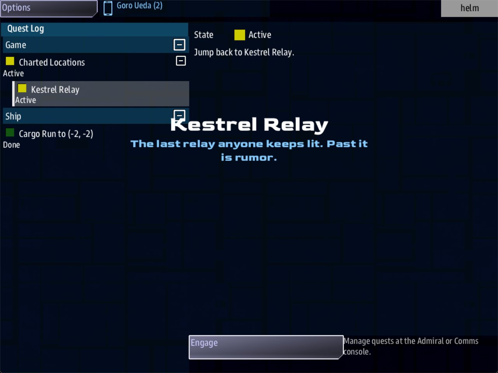

Class 5, Lecture 2 - Your universe file¶
What you will have at the end¶
A mission of your own that runs on Open Universe. Your title is in the game's list of missions. The place the crew starts has a name and a line that you wrote. The crew can leave that place and come back to it. And a game you stop today can be continued tomorrow.

The card on arrival, reading Kestrel Relay: your file's own words.You write one file of your own, kestrel_verge.amd, and change a few marked words in
story.mast.
The video¶
About 6 minutes. Subtitles are available in the player.
Before you start¶
- You have finished Class 1. You can make a mission with
sbs create, write a record, runsbs lint, and start the game withsbs run. - VS Code, and a command prompt open in
C:\Cosmos\data\missions. - The game closed.
You do not start from your Class 1 mission. An Open Universe mission is made from a different template, so this lecture begins with a new folder. Lectures 3, 4 and 5 then build on what you make here.
In this page the folder is called MyUniverse and the universe is called The Kestrel
Verge. Follow along with those names. The exercise at the end is where you make it yours.
Words for this lecture:
| Word | Meaning |
|---|---|
| Universe | The whole world of an Open Universe game: its sides, its places, its work and its story. It is one .amd file |
| System | One place in the universe. The crew is in one system at a time, and jumps to another |
| Home | The system every new game starts in. Its address is 0, 0 |
| Chapter | A heading with two hashes in the universe file: Sides, Jobs, Landmarks and so on |
| Landmark | A place you put on the map by hand, with a name |
| Save | A file the game writes, so a game can be continued |
Step 1 - Make the mission¶
ou is the Open Universe template. --title is the name in the game's list of missions.
The rules for a title are the ones from Class 1, Lecture 3: letters, numbers and spaces,
no colon, 40 characters at most.
Answer its question about libraries as you did in Class 1. Among the lines it prints are these two, the second near the end:
Then bring its libraries up to date, as you did for MyMission:
Now check what you were given:
A new mission from this template is clean before you touch it. It also plays before you touch it. Everything below replaces what the template gave you with something of yours.
Step 2 - What is in the folder¶
Open the MyUniverse folder in VS Code and trust it, as in Class 1.
| File | What it is | Today |
|---|---|---|
my_universe.amd |
The universe. This is the file you write | Rename it and edit it |
story.mast |
Tells the game which universe file to load and what to call it | Change the marked words |
description.yaml |
The line in the game's list of missions | Already has your title |
settings.yaml, story.json, script.py, __lib__.json |
The machinery | Leave them alone |
There is no mission.amd here. In Class 1 the fact sheet had that name. In an Open
Universe mission the fact sheet is the universe file, and you name it yourself.
Step 3 - Give the file your name¶
In VS Code, right-click my_universe.amd and choose Rename. Call it:
Small letters, underscores for spaces, and .amd on the end.
Step 4 - The title record¶
Open kestrel_verge.amd. The lines at the top that start with // are notes. Leave them.
Below the notes is one record with a single #. Change it to read:
# [The Kestrel Verge](kestrel_verge)
---
Universe
Display: The Kestrel Verge
---
Past the last relay the charts are forty years old, and nobody has come to correct them.
Three colonies were planted out here. Two still answer.
| Line | What it means |
|---|---|
# [The Kestrel Verge](kestrel_verge) |
One hash: this is the universe itself. The name in square brackets, then a key in round brackets |
Universe |
A word on a line by itself, with no colon. It says what kind of record this is, the way Arc did in Class 1. Leave it |
Display: The Kestrel Verge |
The title again |
| The lines below the fence | What this universe is. Write it for yourself and your co-writers |
This record is the title page of your manuscript. The game does not show it to players. What players read comes from Step 6 and Step 7.
There is one # record in the file, and it is this one. Everything else in the file sits
under it, with two hashes or three.
Step 5 - The scenario¶
Directly under the title record, leave one empty line and add:
Mode says what kind of game this universe is.
| Word | Use it for |
|---|---|
story |
One ship, and a story with an ending |
campaign |
One ship, and a long game played over many sessions |
sandbox |
An open world with no ending. This is what you get if you write no Mode at all |
skirmish, war |
Fleets and admirals fighting each other. Leave these until Lecture 14 |
In a mission made from this template, story, campaign and sandbox play the same
today. The word starts to matter when the fleet game is added in Lectures 14 and 15.
Write the one that is true of your story.
The key in round brackets must be scenario. The game looks for that word.
Step 6 - Name the place they start¶
The template already has two chapters, ## [Sides](sides) and ## [Jobs](jobs). Leave
them. Lecture 3 and Lecture 6 replace them.
Go to the very end of the file, leave one empty line, and add:
## [Landmarks](landmarks)
### [Kestrel Relay](kestrel_relay)
---
At: 0, 0
Prefab: station
---
The last relay anyone keeps lit. Past it is rumor.
| Line | What it means |
|---|---|
## [Landmarks](landmarks) |
A chapter of named places. The key must be landmarks |
### [Kestrel Relay](kestrel_relay) |
Three hashes: one place. Its name, then its key |
At: 0, 0 |
Which system it is in. 0, 0 is home |
Prefab: station |
It is a station |
| The line below the fence | What the crew is told when they arrive |
Three things happen because of this record:
- When the crew arrives at home, a card names the system Kestrel Relay and shows your line under the name.
- A station called Kestrel Relay is in the system. The game also puts a station of its own there, called Starbase. You will have both.
- Kestrel Relay is written into the crew's list of charted places, so they can come back to it.
Keep the line under the fence on one line, and short: 60 characters or fewer. The
card shows the first line only, and it cuts a longer one at a word and puts three dots
after it. The last relay anyone keeps lit. Past it is rumor. is 50.
This is one landmark, to give your universe a front door. Lecture 5 is the whole map.
Step 7 - Tell the game about it¶
Open story.mast. You change three things and leave one alone. Do them in this order.
1. The title. Press Ctrl+H. In the first box type My Universe. It should find
4. In the second box type your title, and press Replace All.
2. The file name. In the first box type my_universe.amd. It should find 2. In
the second box type kestrel_verge.amd, and press Replace All.
If the counts are not 4 and 2, stop and look at what was found before you replace.
3. The two lines the players read. Find the line that starts @map/. The two lines
under it each start with a double quote. Replace them with two lines of your own:
" Past the last relay the charts are forty years old. Two colonies still answer.
" Take work at Kestrel Relay and find out what happened to the third.
Each starts at the left edge with a double quote and a space. They are the description on the mission's start screen.
4. Two lines to leave alone. Near the top are two lines that let the crew travel:
| Line | What it does |
|---|---|
QUEST_ENGAGE_ENABLED |
Gives Helm an Engage button in the Quest Log. Without it the crew can take a cargo run and never fly it |
WAYPOINTS_ENABLED |
Keeps a list of the named places the crew has been, so they can Engage a way back |
When you are done, your title is in story.mast four times, spelled the same way each
time. The words my_universe with an underscore are still there, in four places. Leave
them. They are names inside the machine, and players never see them.
Save both files.
Step 8 - Check it¶
Lint reads both files. It checks the records in kestrel_verge.amd, and it checks that
story.mast still loads. Each row below was made on purpose, one change to the finished
files, then linted, then played.
Mistakes in kestrel_verge.amd that lint finds
| The mistake | What the game does | What lint says |
|---|---|---|
Mode: storey |
Ignores it. The mode is sandbox |
A warning: not a valid value, "it will be silently ignored" (unknown-enum-value) |
Mode story, with no colon |
Ignores it | An error: expected "Label: value" (fence-syntax) |
## Scenario, with no brackets and no key |
Ignores the whole record | An error: "it is not written as one: hashes, one space, [Name], then (key)" (broken-heading) |
### [Scenario](scenario), with three hashes |
Reads it as two. Nothing is lost | An error: "has 3 hashes and the heading it sits under has 1" (heading-level-jump) |
#### [Kestrel Relay](kestrel_relay), with four hashes |
Reads it as three. Nothing is lost | The same error (heading-level-jump) |
| The title record written with two hashes | Loses every chapter. No landmark, and each of your headings becomes a faction | An error: "there is no title above it" (heading-level-jump) |
| The title with no square brackets | The same | The same error, but on the line of the NEXT heading. Look one heading up |
The title with no space after the # |
The same | Two errors. The first is on the right line: "there is no space between the hashes and the [" (broken-heading) |
The closing --- left off the title record |
Plays. The title record has no text | An error: "the fence that opens here has no closing ---" (unclosed-data-fence) |
Dispaly: |
Nothing changes | A warning: "Dispaly is not a field a map has" (unknown-field) |
| A curly quote or a long dash in your prose | Shows the plain one in its place | A warning for each one (non-ascii) |
## [Landmarks](places) |
No Kestrel Relay. Home is called Home Port | A warning on the Prefab: line: "this record is read as a map" (unknown-field) |
| The landmark written with two hashes | The same | The same warning |
Never play with a lint error in the title record. The game cannot find your chapters, and you get an empty universe with strangers in it.
Mistakes in kestrel_verge.amd that lint cannot see
Lint says clean for every one of these.
| The mistake | What the game does |
|---|---|
# [Scenario](scenario), with one hash |
Every chapter below it is lost: no sides of yours, no jobs, no landmark. The game invents two factions, named The Kestrel Verge and Scenario |
## [Scenario](setup): any key but scenario |
Mode is ignored |
Mode: story written inside the title record |
Mode is ignored |
At: home, At: 0, or no At: line |
The landmark is nowhere. Home is called Home Port |
| The landmark's line written on two lines | The card shows the first line only |
So check these by eye:
- One hash on the title, two on
ScenarioandLandmarks, three onKestrel Relay. - The keys are
scenarioandlandmarks, in round brackets. At:is two numbers.- The landmark's line is one line, of 60 characters or fewer.
Mistakes in story.mast that lint finds
Each of these means nothing in the mission runs: no ship, no station. Lint's error ends
"The story does not compile, so NOTHING in this mission runs until this is fixed", and its
code is mast-compile.
| The mistake | What lint says first |
|---|---|
A colon in the title on the display: line |
mapping values are not allowed here. It names line 1. The mistake is on the display: line |
A space in front of display: |
The same |
| A description line with no quote at the start | Unrecognized syntax, with the line |
| A description line with spaces in front of it | Bad indentation, on the line after it |
The closing quote missing after the title on the @map/ line |
Unrecognized syntax, on that line, and three more errors below it |
The last UNIVERSE_SELECT line moved to the left edge |
Bad indentation, on the line after it |
Mistakes in story.mast that lint cannot see
Lint says clean for every one of these.
| The mistake | What the game does |
|---|---|
| The title spelled two ways. One capital or one extra space is enough | The universe is not loaded. The game still starts, with nothing around the ship: no station, no sides and no landmark. mast.runtime.log names the title it looked for |
The file name after universe: is not your file's exact name |
The same |
QUEST_ENGAGE_ENABLED line deleted |
No Engage button. A cargo run can be taken and never flown |
WAYPOINTS_ENABLED line deleted |
No list of charted places, so no way back |
true with a small t on either of those lines |
Nothing in the mission runs |
If the game starts and your universe is not there, open the file mast.runtime.log in
your mission folder. When the universe could not be loaded, it says so there. If it names
a file called sides.amd, the title is spelled two ways. If it names your own file, the
name after universe: is wrong, or the file was never renamed.
Step 9 - Play it¶
Start the game with a Helm and a Comms console:
- When the game starts, a card names the system Kestrel Relay, with your line.
- In the
commswindow, select a station and choose Accept Cargo Run. A cargo run is a job: carry freight to another system. Both stations offer the same run. A station offers other things too. Leave them for now. - In the
helmwindow, press the handheld icon in the top bar, then Quests. The cargo run is in the Quest Log, with the system it goes to in its name. Select it and press Engage. The ship jumps to that system, and the run pays 400 credits on arrival. - In the Quest Log, find Charted Locations. Kestrel Relay is in it.
- Close the game. Do not go home first.
Now look at what the game kept. In File Explorer, go to C:\Cosmos\data\missions, then
common_data, then saves. Open this file in VS Code:
Near the top, current_system holds the two numbers of the system you stopped in.
Lower down, side_credits holds 900: the 500 you start with, and the 400 the run paid.
- Start the game again, with the same command. You are in the system you stopped in, with the pay from the cargo run.
- In the
helmwindow's Quest Log, select Kestrel Relay under Charted Locations and press Engage. You are home, and the card says so.
What you need to know about the save
| Fact | What it means for you |
|---|---|
The file is named after the title in story.mast, in small letters with underscores, then _1 |
Change the title and the game starts a new, empty save. The old file stays where it was |
A game started with map=0 always continues the save, when there is one |
To begin again, close the game and delete the save file. With no file, the next start is a new game |
| Two missions with the same title use the same file | Give each universe its own title. A mission left as My Universe shares a save with every other mission left that way |
| The save holds where the ship is, the systems it has seen, its jobs and its credits | It does not hold your universe. Change kestrel_verge.amd and the next start reads the new file |
The start screen has a setting for this too. Start the game without map=0, and the
server shows the mission's start screen, with a Start list that reads Continue.
Its other choice, New Game, replaces the save. It does not ask first. The game keeps
the campaign that was replaced, once, beside the save, in a file whose name ends
.previous.bak.
A mission made from today's template has one more setting there: Save Slot, a dial
from 1 to 6. The _1 at the end of the save's name is the slot. Another slot is another
campaign, in a file of its own. Nobody has seen the dial on a screen for this page. What
was measured is that slot 2 wrote universe_save_the_kestrel_verge_2.yaml and left the
first file as it was. Class 6 Lecture 2 uses it.
If something goes wrong¶
| What you see | Likely cause |
|---|---|
sbs create says Error: no template 'ou', or never prints MyUniverse is ready. |
Your tool is older than this page. Type sbs update, then try again |
| The start screen says My Universe | Step 7, part 1 was not done. Replace All should have found 4 |
| The start screen has no Save Slot | Your folder was made before the dial was added. Nothing is wrong: the game plays in slot 1, as this page says. Class 6 Lecture 2 gives the one line that adds the dial |
| The game starts with no station, or with no Kestrel Relay | The universe file was not loaded, or the landmark was not. Read mast.runtime.log: a title spelled two ways is named there. Then check the title is spelled one way, the file name after universe: is right, and the landmark has At: 0, 0 |
| No ship and no station. Nothing happens | story.mast is broken. Run sbs lint MyUniverse and read the first error |
| No Engage button in Helm's Quest Log | The two travel lines are missing or changed. See Step 7, part 4. If your story.mast never had them, type them directly under the first UNIVERSE_SELECT line. Both start at the left edge, and True has a capital T |
| The Quest Log says "Manage quests at the Admiral or Comms console." | You are on Helm, looking at a job. Helm flies a job. Comms takes it and gives it up |
| The game starts somewhere you did not expect | It continued a save. Delete the save file to begin again |
| The game starts somewhere you have never been | Another mission has the same title and wrote that save |
| Lint reports a heading error on a line that looks right | Look at the heading above it. The title heading is missing its square brackets |
Exercise¶
Make the universe yours.
- Choose a title: letters, numbers and spaces.
- Do Steps 3 to 7 again with your own names: the file name, the title record, and both
Replace All commands. This time the first box holds
The Kestrel Vergeandkestrel_verge.amd. - Write your own two lines for the start screen, and your own home port: a name, a key, and one line.
- Choose your
Mode. - Before you play, write down the name the save file will have. Then run lint, play,
take a cargo run, stop, and look in
common_data\saves. Were you right? - Break it once on purpose. Change one letter of the title on the
display:line only. Run lint: it is happy. Play: your universe is gone. Readmast.runtime.log. Then put the letter back.
The rest of this class is written with The Kestrel Verge and kestrel_verge.amd. If you
changed them, read your own names where the page has those.
Checkpoint¶
You are done when all five are true:
sbs lint MyUniversesaysclean.- The game's list of missions shows your title.
- On arrival, the card names your home port and shows your line.
- Helm's Quest Log has an Engage button on a cargo run, and Charted Locations lists your home port.
- After you stop in another system and start again, you are in that system.
Next¶
Lecture 3 replaces the two factions that came with the template with three of your own, says which of them shoots first, and gives one of them your home port.
Further reading¶
- "Getting started" in the Open Universe writer's walkthrough. It describes adding a
universe to the Open Universe mission itself, where the list of universes is in a file
called
universes.mastand you pick one from a list on the start screen. In your own mission the same entry is instory.mast, and there is no list. scout_signal.amdin the Open Universe mission: a short universe with a scenario, a story and one landmark, to read as a whole.- "The AMD file format" in the library documentation: headings, fences, and how a record says what it is.
Download this lecture's finished files (a zip of its example folder).